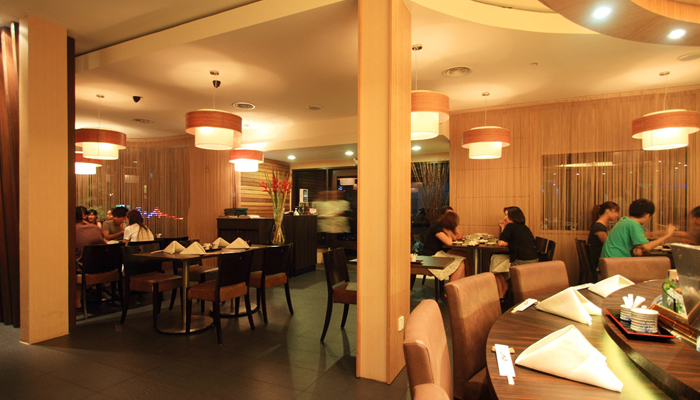

About Us
"Ishin's interior design and lighting will set the mood right to get you started on an exquisite Japanese culinary journey."
Situated within the metropolitan area of Kuala Lumpur, Ishin is a fine dining Japanese restaurant that serves genuine Japanese and Kaiseki style cuisines.
From the moment you step through Ishin's doorway, you'll experience a warm and cozy ambience as Ishin's interior design and lighting will set the mood right to get you started on an exquisite Japanese culinary journey.
Ishin's oval sushi counter is also one of Malaysia's biggest counters that gives you first-hand experience to witness the chefs' meal preparations and it also encourages face-to-face interaction with the chefs.
Private rooms and Tatami seating are also available giving you flexibility to host private events and corporate functions in a comfortable setting where free valet services are also extended to dinner guests as an added convenience.